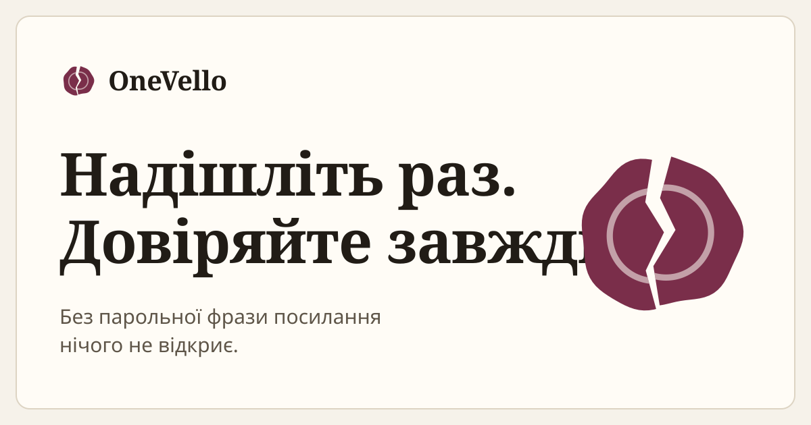

ONE-2 · Landing UK · v0.1 · 24 Nov 2026
Лендинг українською
Повний лендинг українською: головний екран, як це працює, що захищено й що ні, можливості з коду, питання, відкритий код і футер. Слоган лишається «Надішліть раз. Довіряйте завжди.», а поруч чесний список того, від чого сервіс не захищає.
OG-зображення (1200 × 630)
SVG для перегляду. Соцмережі приймають PNG або JPG, тож при впровадженні його треба експортувати в PNG зі шрифтами.
